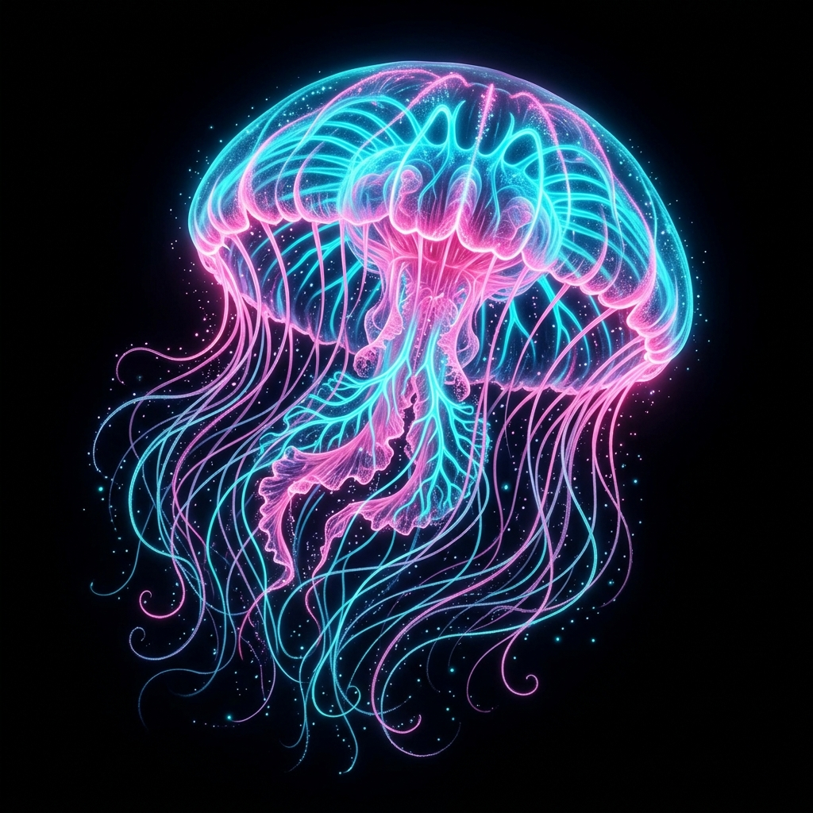
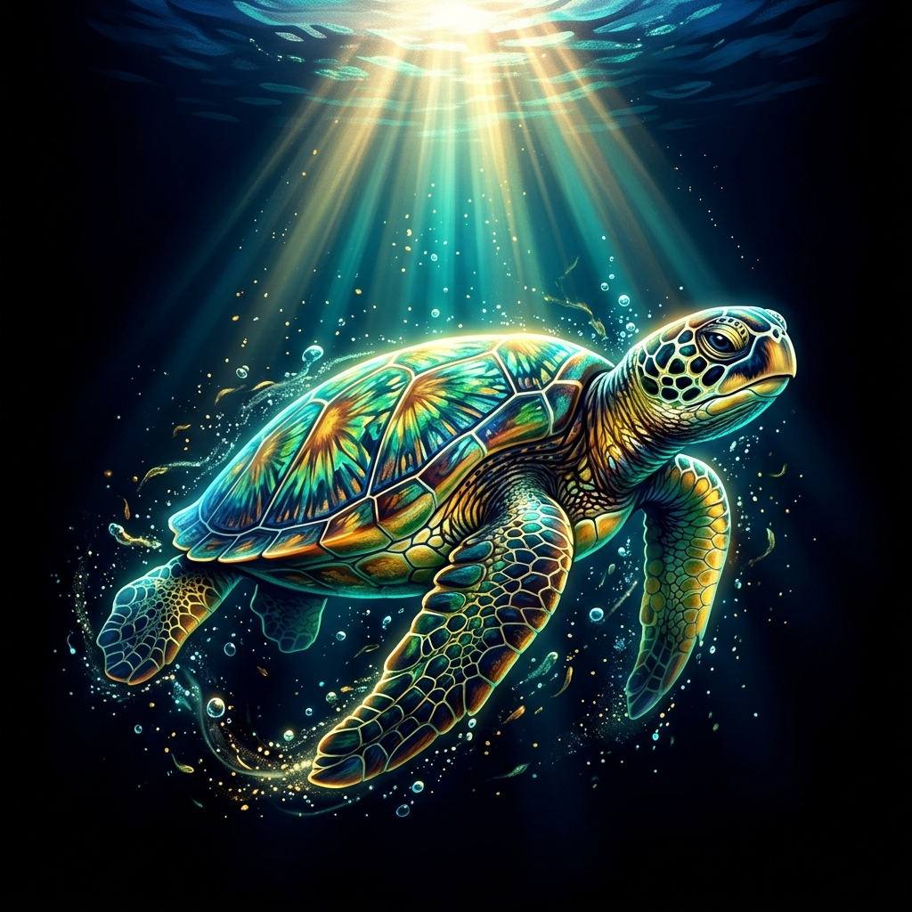
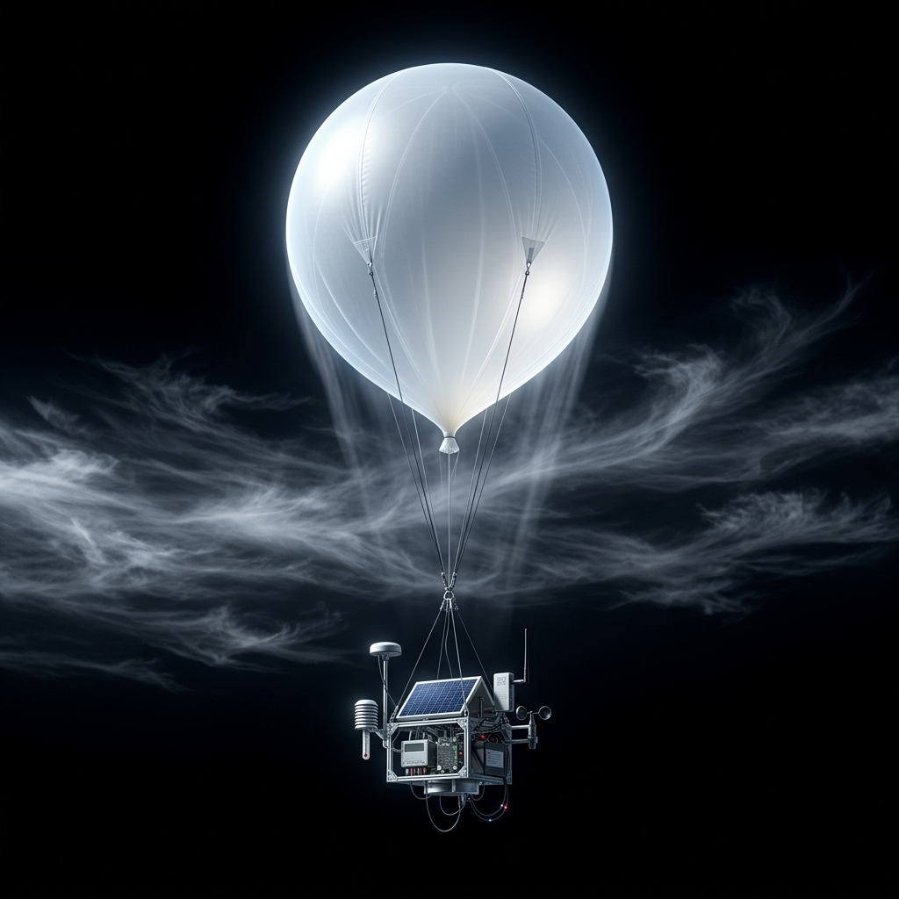
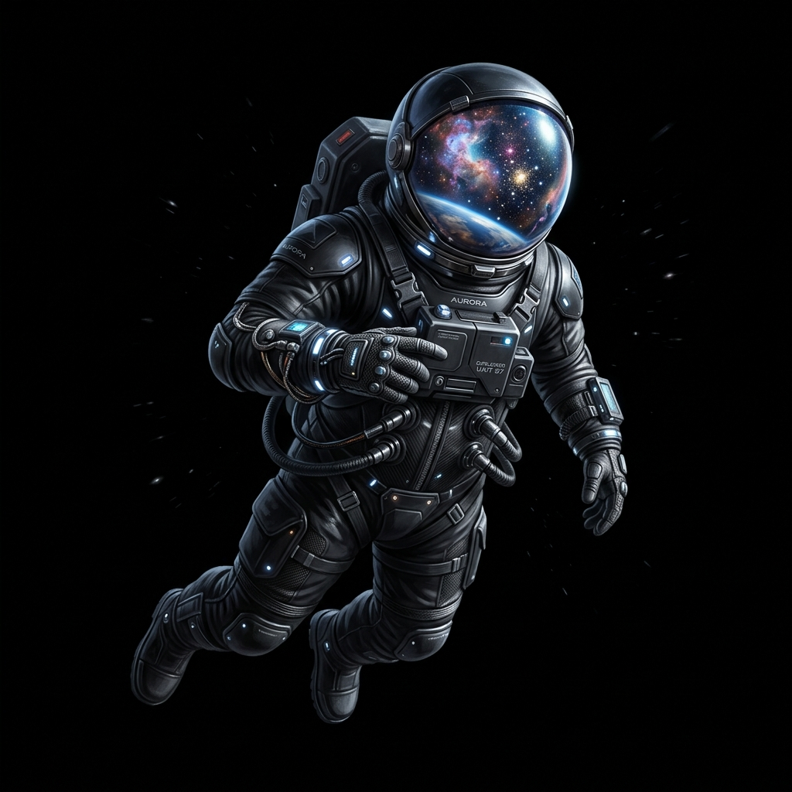

THE HADAL ABYSS
Mariana Trench System
You are floating in the deepest part of Earth's oceans. Light cannot penetrate here. The pressure is a crushing 1,000 atmospheres, yet biology thrives in the darkness, fueled by chemosynthesis from thermal vents spewing mineral-rich water at 400°C.
1028 kg/m³ SALINITY
34.7‰ LIGHT LEVEL
0.00%

THE SUNLIT EPIPELAGIC
Upper Ocean Pelagic Zone
Approaching the surface, sunlight breaks through the turquoise depths. Here lies the cradle of marine biodiversity. Phytoplankton harvest solar energy, feeding vast food webs of coral reefs, schools of fish, and ocean wanderers like the green sea turtle.
6.2 mg/L PH LEVEL
8.1 pH BIOMASS
HIGH
THE BIOSPHERE SHIELD
Terrestrial Forest & Peaks
We breach the ocean surface into the atmosphere. Among giant redwoods, redwood canopy ecosystems capture carbon and water, while wind currents rise over rugged mountain peaks. Life finds purchase in every crevice, shielded by a dense blanket of nitrogen and oxygen.
20.9% HUMIDITY
65% ELEVATION
1,250 m

THE STRATOSPHERE
The Middle Atmosphere
Entering the stratosphere. The air becomes thin, dry, and cold. The protective ozone layer absorbs harsh UV radiation, creating a temperature inversion. Here, scientific weather balloons float on the edge of the sky, documenting global climates under a dark indigo vault.
1.2% of SL OZONE CONC.
12 ppm UV ABSORB
99%

THE COSMIC VOID
Thermosphere & Low Earth Orbit
We cross the Karman line at 100km altitude. Atmospheric drag ceases, and you float in the weightlessness of orbit. Surrounded by distant cosmic nebulae and twinkling stars, you look back at the beautiful fragile blue marble cradling all of human history.
0.00 G VACUUM
10⁻¹⁰ Torr RADIATION
HIGH